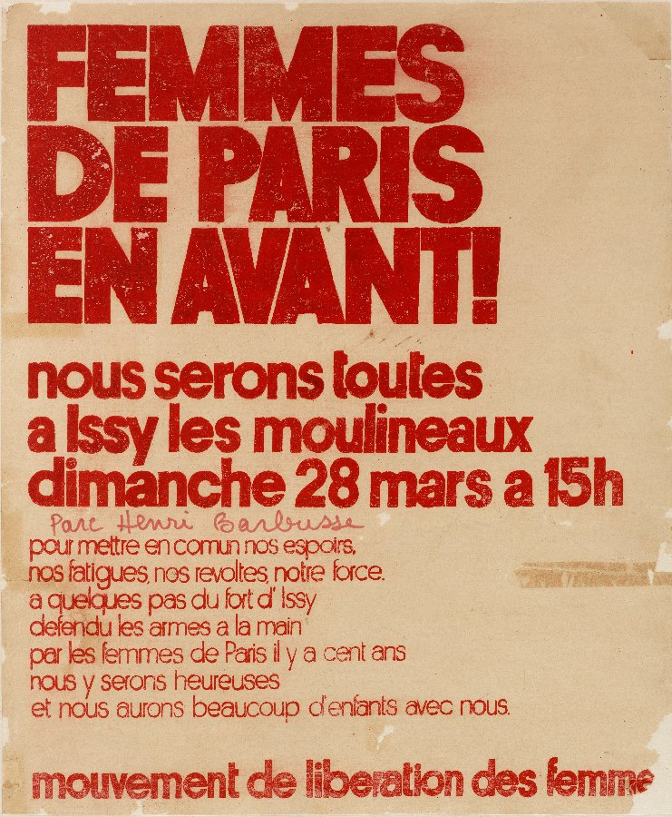

Listen to the song on YouTube.
This article is a translation of Histoire d’un slogan #1 : L’Hymne des femmes et du MLF.
With respect to the licence: CC BY-SA 4.0
History of a slogan : The Hymne des femmes et the MLF
Written by members of the MLF (Mouvement de Libération des Femmes, Women’s Liberation Movement), the Hymne des femmes (Women’s Hymn) has become a reference for many activists and feminist organisations in French speaking countries.
In March 1971, a dozen feminists, gathered in Paris in the apartment of writer Monique Wittig, put together the lyrics of this song with 5 verses and a refrain, that will later be titled Hymne des femmes. Among them this evening were, Josée Contreras and Antoinette Fouque (psychoanalysts), Cathy Bernheim (writer), Catherine Deudon (photographer), Hélène Rouch (academic), Gille Wittig (illustrator) and her sister Monique. All affiliated with the MLF, an informal single-sex feminist movement formed in early 1970. Writing and performing songs were part of their modes of action.
The melody of the song is borrowed from the Chant des marais (Peat Bog Soldiers in English, Die Moorsoldaten in German), as suggested by Josée Contreras who had heard it at summer camp. She doesn’t know (source) at the time, that this melody was composed around 1933 by German communists held in the Börgermoor camp, which then spread through the nazi concentration camps and the International Brigades, before entering the Scout Movement repertoire after the war. This accidental borrowing draws, according to journalist Chloé Leprince, a “sound bridge […] between patriarchy and deportation”, which echoes other references to the Shoah in feminist and student speeches at the time. As noted by musicologist Élise Petit (source), this activist reappropriation of the Chant des marais was not new as other covers and reimagining have been found in Germany, England, Greece or even Corsica.
Worth mentioning, the move from the Chant des marais to the Hymne des femmes is reminiscent of some variations of La Marseillaise: a war chant reused by the revolutionaries of 1848 and the communards of 1871 before becoming national anthem in 1879, it’s also the melody of La Marseillaise des cotillons, written by Louise de Chaumont in 1848, and of Women’s Marseillaise sung by the British suffragettes, and later the American ones, in the 1910s, with lyrics by Florence MacAulay. Punctuating the history of struggles, these chants sung in unison serve to galvanize a group, exteriorize a demand or a suffering, and assert the existence of a shared identity. Thus, the Hymne des femmes is part of a musical and activist tradition and expresses out loud the demands of the second feminist wave as well.
A reflection of the MLF demands
The lyrics are published with two other songs in Le torchon brûle, the MLF newspaper, in February 1972.
| French |
English |
Nous, qui sommes sans passé, les femmes,
Nous qui n’avons pas d’histoire,
Depuis la nuit des temps, les femmes,
Nous sommes le continent noir.
Refrain :
Levons-nous, femmes esclaves,
Et brisons nos entraves,
Debout ! Debout !
Asservies, humiliées, les femmes,
Achetées, vendues, violées,
Dans toutes les maisons, les femmes,
Hors du monde reléguées.
Refrain
Seules dans notre malheur, les femmes,
L’une de l’autre ignorée,
Ils nous ont divisées, les femmes,
Et de nos sœurs séparées.
Refrain
Reconnaissons-nous, les femmes,
Parlons-nous, regardons-nous,
Ensemble on nous opprime, les femmes,
Ensemble révoltons-nous.
Refrain
Le temps de la colère, les femmes,
Notre temps est arrivé,
Connaissons notre force, les femmes,
Découvrons-nous des milliers.
|
We who have no past, women,
We who have no history,
Since the dawn of time, women,
We are the dark continent.
Refrain :
Let’s rise, female slaves,
And break our chains,
Stand up, stand up!
Enslaved, humiliated, women,
Bought, sold, raped,
In every home, women,
Cast out from the world.
Refrain
Alone in our misery, women,
Ignored by each other,
They’ve divided us, women,
And separated us from our sisters.
Refrain
Let’s recognize each other, women,
Talk to each other, look at each other,
They oppress us together, women,
Let’s revolt together
Refrain
The time for wrath, women,
Our time has come,
Let’s be aware of our strength, women,
Let’s find out thousands.
|
The various verses reflect the concerns of MLF activists. The opening stanza refers to a key challenge for the future: the transmission of the memory of feminist struggles and, more broadly, the place given to women in the writing of history. In fact, this reflection motivated one of the movement’s first major events: on August 26, 1970, a dozen women activists gathered near the Arc de Triomphe, in Paris, and unfurled banners and placards stating that “one in two men is a woman” and that “there is more unknown than the unknown soldier: his wife”. L’Hymne des femmes was written for another rally planned for Issy-les-Moulineaux in March 1971, to commemorate the centenary of the Paris Commune and women’s participation in the defense of the Fort d’Issy.

In the following verses, the lyrics shift. Denunciatory when they evoke sexual violence and relegation to the domestic sphere, they then become mobilizing: the song’s authors invite women to come together, again echoing the actions of the MLF. The latter opted for a non-mixed militancy, by and for women, multiplying actions, meetings and informal discussion groups.
A group chant
Writing such an anthem, to be sung collectively, was part of a strategy to occupy public space and the media. The aim was to make the MLF’s demands seen and heard through songs, demonstrations and spectacular actions: disruption of the États généraux de la femme organized by Elle magazine in November 1970, support for striking women workers in Troyes in February 1971… On November 20, 1971, the MLF anthem resounded through the streets of Paris during an international march for free and unrestricted contraception and abortion. The scale and multiplicity of mobilizations on this subject led, in January 1975, to the adoption of the Veil law on abortion, for an initial trial period of five years. Its permanent renewal in December 1979 was preceded by another major demonstration, during which the Hymne des femmes was once again heard.
Even today, the Hymne remains a musical reference for many feminist activists and organizations. It is frequently taken up in processions marking International Women’s Rights Day on March 8, and those surrounding the International Day for the Elimination of Violence against Women on November 25 - particularly those organized in recent years by the #NousToutes collective. The lyrics are also sung at other demonstrations - in favor of abortion rights and same-sex marriage, for example - and at meetings of institutionalized feminist organizations such as Osez le féminisme! and the Planned Parenthood confederation. The Hymne des femmes is also used to express the feminist commitment of amateur choirs and professional performance companies, who sometimes turn it into a participatory project - like the Breton company Dicilà, in March 2018 and again in June 2019 on the occasion of the Women’s Football World Cup.
Although the MLF has detached itself from traditional forms of political and militant representation, its anthem now also resonates within left-wing political parties. In January 2022, for example, it was played at a France Insoumise rally, and then in November of the same year by female MPs affiliated to the New Ecological and Social People’s Union (NUPES) following the vote on the constitutionalization of the right to abortion.
Intersectional thinking ?
Passed down from one generation to the next, the Hymne des femmes is today the subject of diverse and sometimes critical interpretations. In particular, some feminist activists reject the use of an all-encompassing “we”, which cannot account for situated identities and the plurality of discriminations. This reflection on the priority to be given to gender issues was already present in the 1970s. The link between feminism and class struggle proved to be a source of divergence within the MLF. At the same time, organizations based on a common identity were emerging: the Gouines rouges (Red Dykes) group was created in 1971 in reaction to the relative invisibility of lesbians within the feminist and homosexual movements, while the Coordination des femmes noires (Black Women’s Coordination), launched in 1976, emphasized a particular experience and denounced the multiplicity of relations of domination.
This intersectional approach, at the heart of the third feminist wave, now extends to the lyrics of the Hymne des femmes itself. From an Afro-feminist perspective, the criticism focuses in particular on the analogy between women and slaves, which can also be found in other writings from the 1970s: the product of a feminism “ignorant of its own whiteness”, this passage seems to minimize the violence of slavery at the same time as it makes black women invisible. Some feminist activists and structures therefore opt for alternative lyrics: for the chorus, for example, the Lausanne anarchist choir alternates between “Écrivons notre histoire / Construisons nos espoirs” and “Levons-nous femmes en rage / Et brisons toutes les cages”.
(“Let’s write our history / Let’s build our hopes” and “Let’s rise, enraged women / And break all the cages”)
Other singers and activists, approached by sociologist Cécile Talbot, regretted the austerity of the original version, and in particular the passivity suggested by the opening stanzas. In Marseille, in 2015, preparations for a non-mixed night march saw the emergence of a new version: “Leurs temps sont révolus, les femmes / Ensemble regroupons-nous / Avec nos poings, nos pieds, les femmes / Pour pratiquer le kung-fu !” (“Their time is over, women / Together let’s regroup / With our fists, our feet, women / To practice kung fu!”) - in reference to the self-management and self-defense practices more prevalent today. Others have chosen to retain the original lyrics, though without fully embracing them. As Cécile Talbot points out, these contemporary reappropriations reflect a desire to preserve the memory of past mobilizations, as well as the evolution and diversity of feminism.
Original text published on November 02, 2023 (Licence - CC BY-SA 4.0)
Translation published on March 8, 2024 (Licence - CC BY-SA 4.0)


{kind=link}
Share this post: